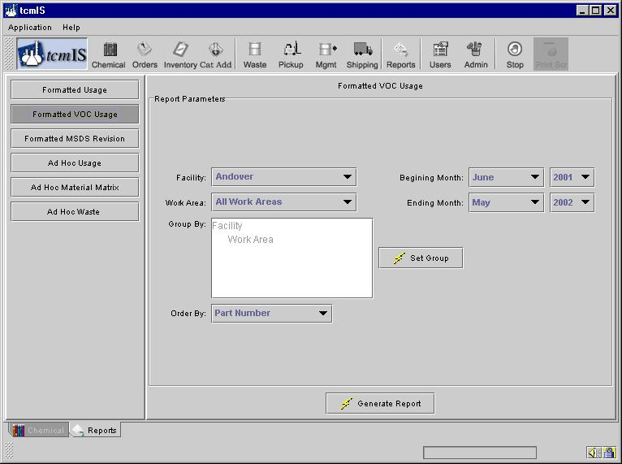
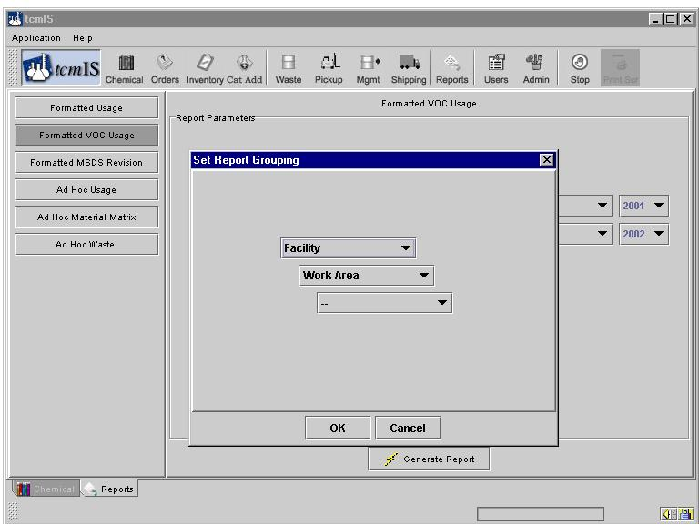
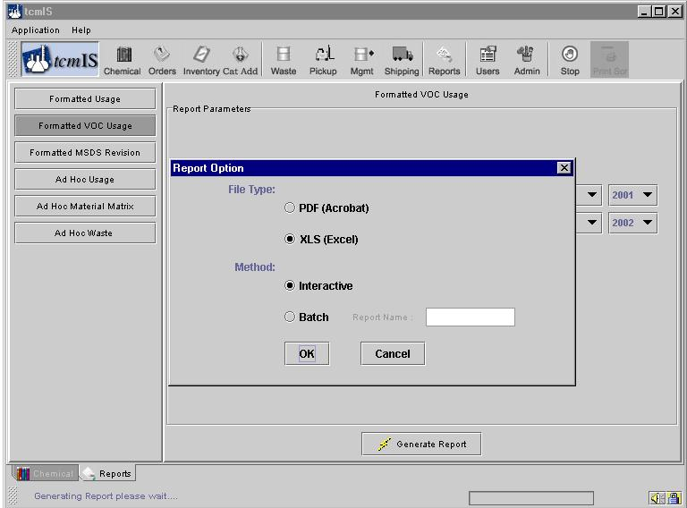

To generate a formatted VOC usage report click on the button "Formatted VOC Usage" on the left. This screen will generate a report of the VOC chemicals used in the search criteria chosen.

Choose a facility, work area and a time period for the report.
You can also change the Group By categories and order by category.

Once you are finished choosing the different parameters to generate your report, click on the button "Generate Report". You will be given two options as shown

You can generate the report in either PDF format, which you can not edit, or a CSV format, which you can open in MS-Excel and edit. You can also choose between getting the report right away by choosing the interactive option or you can choose to pickup your report later by choosing the Batch option.
In the "Interactive" option the report is displayed in a browser immediately after you press ok. For "Batch" method an email is sent to you informing about the status of your report which you can pickup at your convenience.
Mostly all the reports are kept on our servers for about two weeks. If you want to keep a permanent record of the reports you generated it is suggested to save the report locally on your computer.